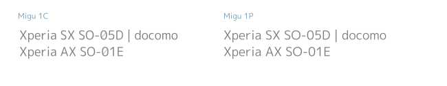

Migu（ミグ）フォント
Miguフォントは、以下の特徴があります。
- M+フォントに改変を加えて、文字を判別しやすくした
- IPAゴシックを合成して、漢字をJIS第1水準～第4水準まで持つ
ダウンロード
Migu 1P
migu-1p-20200307.zip (約4MB) のダウンロード
フォント名の「P」は Proportinal（プロポーショナル）の略です。
MigMix 1Pをもとに「半濁点が大きい」などを改変しました。詳しくは下記の説明をご覧ください。
Migu 1C
migu-1c-20200307.zip (約4MB) のダウンロード
フォント名の「C」は Clear の略です。英数字のデザインが Migu 1Pとは少し異なります。
上のMigu 1Pと似た感じですが、「全角ひらがな・カタカナもプロポーショナル」などの特徴があります。
Migu 1M
migu-1m-20200307.zip (約4MB) のダウンロード
フォント名の「M」は Monospace（等幅）の略です。Rictyフォントの合成にこのフォントが使われています。
Migu 2M
migu-2m-20231123.zip (約4MB) のダウンロード
MacOSのHTMLエディタ Coda2 に搭載されました。
このMigu 2Mは、MigMix 2Mとの違いを控えめにしてあります。半濁点を大きくしていないなどがMigMix 1Mとの違いです。
バージョンごとの変更点は変更履歴をご覧ください。
どこが違うの？
| 特徴 | MigMix 1P/2P | Migu 1P | Migu 1C | MigMix 1M/2M | Migu 1M | Migu 2M |
|---|---|---|---|---|---|---|
| 等幅 or プロポーショナル（P） | P | P | P | 等幅 | 等幅 | 等幅 |
| 全角ひらがな・カタカナも プロポーショナル |
－ | － | ● | － | － | － |
| 行間（縦の高さ 多いほうが縦幅大きい） | 1485 | 1485 | 1485 | 1485 | 1110 | 1110 |
| 半濁点が大きい | － | ● | ● | － | ● | － |
| 0O（数字ゼロ・大文字オー）の区別 | － | － | ● | ○ | ● | ○ |
| 1Il（数字１・大文字アイ・小文字エル）の区別 | － | ○ | ● | ● | ● | ● |
| カ力 エ工 ロ口 ー一 ニ二（カタカナ・漢字）へヘ（ひらがな・カタカナ）の区別 | － | ● | ● | － | ● | ○ |
| 〜～（波ダッシュ・全角チルダ）の区別 | － | ● | ● | － | ● | － |
| 数学記号や一部のギリシャ・ロシア文字が全角 | － | － | － | － | ● | ● |
| JIS2004漢字字形 | － | ● | ● | － | ● | ● |
－○●の意味：－は非対応、○はある程度対応、●はフル対応
等幅 or プロポーショナル
半角英数字の、次の文字までの距離が文字ごとに異なると、プロポーショナル（可変幅）フォントと呼びます。距離が一定なら「等幅（とうはば）」フォントと呼びます。
全角ひらがな・カタカナもプロポーショナル
プロポーショナルフォントの中にも、全角ひらがな・カタカナが可変幅なものと等幅があります。Migu 1Cでは全角ひらがな・全角カタカナ・役物（「」『』【】・の7文字）を可変幅にしました。
行間（縦の高さ）
行間は、適度に広いと文を読みやすくなります。しかし等幅フォントが使われる分野のひとつ、プログラミングでは「行間をせまくして、画面に より多くの行を表示できる」ほうが好まれます。
半濁点が大きい
半濁点（ぱぴぷぺぽパピプペポ の右上の円）を大きくして、濁点と判別しやすくしています。

0O（数字ゼロ・大文字オー）の区別
MigMix 1M/2Mは全角ゼロにスラッシュがありません。
Migu 1C/1Mには全角ゼロにもスラッシュがあり、半角ゼロのスラッシュは線幅を細く目立ちにくくしました。

1Il（数字１・大文字アイ・小文字エル）の区別
MigMix 1Pは大文字アイ・小文字エルがどちらも縦棒ですが、Migu 1Pには大文字アイに横棒つけました。
Migu 1Cは さらに小文字エルに特徴的な横棒がついています。MigMix 1M/2Mは最初から横棒付きです。
カ力 エ工 ロ口 ー一 ニ二（カタカナ・漢字）へヘ（ひらがな・カタカナ）の区別
もともと字形は同じですが、区別できるなら してみたい。Migu 2Mでは長音（音引き ー）とひらがなの「へ」は未変更です。
〜～（波ダッシュ・全角チルダ）の区別
全角ニョロ記号は、iOS/Mac/Linuxでは波ダッシュ（WAVE DASH,U+301C）を使い、Windowsでは全角チルダ（FULLWIDTH TILDE,U+FF5E）を使う慣習です。MigMixや多くの日本語フォントではこの2つに同じ字形を割り当てていますが、Miguフォントでは区別できるようにしました（ただしMigu 2Mはどちらも波ダッシュの形）。
数学記号や一部のギリシャ・ロシア文字が全角
過去（Shift_JISの時代）の日本語フォントは、×÷±などの数学記号、αβなど一部のギリシャ文字、φЯなど一部のロシア文字が全角でした。MigMix 1M/2Mではそれらが半角になっているのですが、Migu 1M/2Mで全角に戻しています。
JIS2004漢字字形
MigMixフォントは、日本の文字規格 JIS X 0213:2004（通称 JIS2004）より前の規格(JIS90)を採用しています。
Miguフォントは、JIS2004の漢字字形に準拠するようにしています。jp90タグによるJIS90字形への置き換えにも対応します。
使い分け
たくさん種類がありますが、オススメを挙げます。
まずはそれを試してみて、そのあと余裕があれば別のを試してみるのもよいですね。
スクリーンショット
-
フォント： Migu 1C, Migu 1M
環境： Linux (Ubuntu 12.04)
元ページ：Wikipedia
{kind=link}
{kind=link}
インストール
動作は、Windows 7,XP と Linux (Ubuntu 12.04)で確認しました。
ライセンス
上記のフォントは以下のライセンスに準じます。
- IPAフォント (IPA_Font_License_Agreement_v1.0.txt)
Copyright (C) 2002-2019 M+ FONTS PROJECT
Copyright(c) Information-technology Promotion Agency, Japan (IPA), 2003-2011.
このフォントをIPAフォントに置き換える場合は、 IPAフォントのダウンロードページで「IPAゴシック（Ver.003.03）」を 入手してください。 派生プログラム（MigMix/Miguフォント）を作成する過程でフォント開発プログラム（FontForge）によって作成された追加のファイルであって派生プログラムをさらに加工するにあたって利用できるファイル （*.sfdファイル）は、配布サイトから入手できます。
ビルド方法
ソースはすべてRepositoryに公開しています。
ビルド方法は、BUILD.txtをごらんください。
フォント名
「M+ と IPA Gothic を合成して、ユニバーサルデザイン（Universal Design）を取り入れたフォント」を略して Migu としました。
ユニバーサルデザイン（UD）フォントは、フォントベンダー各社が2008年頃から提供しはじめたフォントで、要件がいくつかあります。Miguフォントではそのうちの「半濁点と濁点の判読性」という要件を満たしています。
スクリプトで合成する必要のあるMigu
以下のフォントは、上で紹介したMiguフォントに、さらに欧文フォントを合成しています。
欧文フォントのライセンスがIPAフォントライセンスと競合するので、TrueTypeフォントとしては配布できません。合成スクリプトを配布するので、使用するには個人で合成してください。合成スクリプトの使い方は http://d.hatena.ne.jp/itouhiro/20121031 を参考にしてください。
Migu 1VS
migu-1vs-20200307.zip (約4.5MB) のダウンロード
IPAフォントライセンスの制限により、ダウンロードできません。
欧文フォント DejaVu Sans Condensed とMigu 1Cを組み合わせました。英文向きです。Dejavuフォントは外国文字を多数収録しているので、ほかのMiguフォントより約3200文字多く収録。ユニコードアスキーアートもある程度表示可能。
Migu 1BT
migu-1bt-20200307.zip (約4MB) のダウンロード
IPAフォントライセンスの制限により、ダウンロードできません。
欧文フォントBitterとMigu 1Cを組み合わせました。英文向きです。
Migu 2DS
migu-2ds-20231123.zip (約4MB) のダウンロード
IPAフォントライセンスの制限により、ダウンロードできません。
欧文フォント Droid Sans とMigMix 2Pを組み合わせました。半角英数字が横にせまく、英文を読むのに向いています。